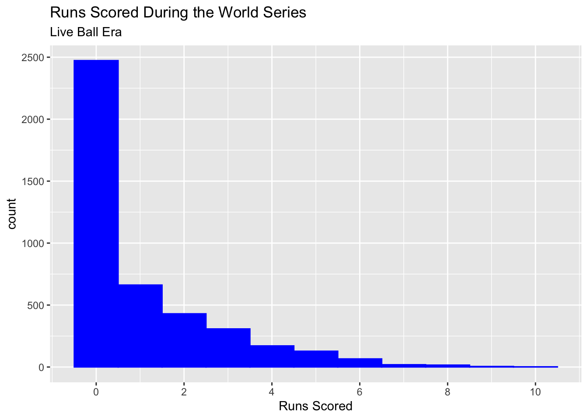

Chapter 6 Poisson Regression
After learning about one type of GLM using Binomial data in the previous section, this chapter will explore another common type of data where GLMs are used - Poisson data.
6.1 What is Poisson data?
To begin, we will start with the types of Poisson data that you may come across. Poisson data occurs when there is a need to model counts. Count data appears often in real world applications, so modeling this data accurately is an important skill to have. The counts of events being modeled should be independent and the upper limit of the counts should be much greater than the majority of the counts - this limit may not even exist. Possion GLMs can also be used to model rates when a Binomial GLM would not be appropriate. This occurs when populations are large and the rate of occurance is very small, usually less than 1%. The Poisson distribution has probability function P(y|\(\mu\)) = \(e^{-\mu}\mu^y/y!\) for y = 0, 1, 2,… and \(\mu\) > 0.
6.2 Why ordinary least squares does not work for Poisson data
Similar to other types of GLMs that you have seen previously, ordinary least squares (OLS) regression cannot be used for Poisson data. Count data violates the constant variance assumption of OLS because as the counts get smaller and approach 0, the variance of the response must decrease, and as the counts grow larger, the variance of the response will tend to increase. The normal distribution is also not adequate for modeling the random component of count data because counts are both non-negative and discrete. The Poisson distribution is a more suitable option to model count data.
6.3 Link functions for Poisson GLM’s
The most common link function used for Poisson regression is the logrithmic link function because it guarentees that \(\mu\) will be greater than 0. It also makes interpretation of the regression parameters more straightforward, since they are interpreted as having multiplicative effects. The systematic component of a Poisson GLM is \(\mu = e^{\beta_0 + \beta_1x_1 + ... + \beta_px_p}\) and increasing \(x_j\) by one will increase \(\mu\) by a factor of \(\beta_j\). Other link functions, while less commmon, can be used for a Poisson GLM. The identity link function, where \(\eta = \mu\), or the sqrt link function, where \(\eta = \sqrt{\mu}\), are two additional options. When all of the explanatory variables are quantitative, the data are modeled by a Poisson regression model using one of the three previous link functions. Additionally, quantile residuals should be used to asses the model fit since the data are discrete. Count data can also be represented in contingency tables so that observations can be cross-classified in their respective categories. These data are modeled using a log-linear model, where all of the explanatory variables are qualitative.
6.4 Poisson Example
Now that we have had a chance to go over some of the characteristics of Poisson GLMs, let’s look at an example involving baseball data. The dataset that we will use is a subset of data from the Lahman package, which is an extensive collection of baseball statistics since the 1800s. This package is an excellant resource for fellow baseball fans to practice fitting various GLM models, including Binomial regressions. The dataset that we will be focusing on is the batting statistics from every World Series during the liveball era. If you do not have the following packages, please take a moment to install them using the install.packages command. To start, we will need to load the Lahman package and the tidyverse package to access our World Series data, which is a subset of the Postseason dataset:
## Loading required package: LahmanNow we can manipulate the data to focus only on the World Series batting statistics from the liveball era:
Our response variable is going to be the runs scored by each player during each World Series from the liveball era. Initially, we can imagine that this will be a good canidate for Poisson regresssion because runs are a quantitative count. The number of runs scored by each player is also probably 0 to 1 typically, but there will be cases where a higher number of runs are occasionally scored and technically there is no upper limit to how many runs that is. Let’s graph the response variable and see if this seems to be the case:
ggplot(data = liveball_ws, aes(x = R)) +
geom_histogram(color = "blue", fill = "blue", binwidth = 1) +
xlab("Runs Scored") +
labs(title = "Runs Scored During the World Series",
subtitle = "Live Ball Era") +
scale_x_continuous(breaks = c(0, 2, 4, 6, 8, 10)) 
This indeed looks like a great candidate for Poisson regression. We could even imagine overlaying a Poisson distribution with a \(\mu\) parameter of about 1 and see that it follows our response variable well. In fact, the mean number of runs scored in this dataset is 1.04, which would be the estimated \(\mu\) value. Let’s now fit a model using batting-related outcome variables as our explanatory variables. We will model runs scored using the number of hits, doubles, triples, and home runs a player recored in each World Series:
##
## Call:
## glm(formula = R ~ H + X2B + X3B + HR, family = "poisson", data = liveball_ws)
##
## Deviance Residuals:
## Min 1Q Median 3Q Max
## -3.7850 -0.8260 -0.8260 0.4824 3.8405
##
## Coefficients:
## Estimate Std. Error z value Pr(>|z|)
## (Intercept) -1.075579 0.027460 -39.170 < 2e-16 ***
## H 0.253262 0.005771 43.884 < 2e-16 ***
## X2B 0.044604 0.017234 2.588 0.00965 **
## X3B 0.087291 0.036760 2.375 0.01757 *
## HR 0.266188 0.015666 16.991 < 2e-16 ***
## ---
## Signif. codes: 0 '***' 0.001 '**' 0.01 '*' 0.05 '.' 0.1 ' ' 1
##
## (Dispersion parameter for poisson family taken to be 1)
##
## Null deviance: 9503.5 on 4279 degrees of freedom
## Residual deviance: 4161.1 on 4275 degrees of freedom
## AIC: 8949.7
##
## Number of Fisher Scoring iterations: 5All of the variables here are significant at the standard .05 significance level, so they are all important for modeling the number of runs scored. Another point of interest to note from the model summary output is that the residual deviance of 4119 is smaller than its degress of freedom 4225 and much smaller than the null deviance of 9383. We will discuss why we should look at the residual deviance versus its degrees of freedom in the next section, but for now, the key takeaway is that the Poisson distribution was a good choice to model our data. Additionally, compared to our higher null deviance, our model does a good job of explaining the variability of runs scored. If baseball is a topic that interests you, I would encourage you to download the Lahman package and see if you can improve on this model by lowering the AIC.
6.5 Problems of overdispersion and solutions
A characteristic of the Poisson distribution is that the mean \(\mu\) equals the variance. However, when modeling real data, this assumption can be a bit \({fishy}\), since the variance is usually greater than \(\mu\), resulting in overdispersion. Overdispersion occurs because the events being counted have a positive correlation and are not completely independent. We did not have to worry about overdispersion in our previous example, but you will likely come across it in other datasets. Overdispersion is an issue for Poisson GLMs because the standard errors of the \(\beta_j\) estimates will be underestimated, making the model’s explanatory variables appear more significant than they actually are. Models fit using the Poisson family can be checked for overdispersion by comparing the residual deviance to the residual degrees of freedom. If the residual deviance is greater than the degrees of freedom, the model is overdispersed, and if the residual deviance is much less than the degrees of freedom, the model is underdispersed, a less frequent occurence. A large residual deviance compared to the residual degrees of freedom could also indicate a lack of fit, but this can be checked by eliminating outliers and fitting the model with the most explanatory variables possible. The residual deviance will still be large if overdispersion is the issue. Similarly, the Pearson goodness-of-fit statistic can be compared to the residual degrees of freedom to check for overdispersion. If the counts are small, so asymptotic approximations might not be accurate, large goodness-of-fit statistics generally indicate a poor model fit.
If there is overdispersion after fitting a Poisson GLM, the model can be fit using other related families. By modeling the data using a hierarchical model to add more variability, \(\mu\) can be treated as a random variable, resulting in the response variable of interest following a negative binomial distribution. The expectation of \(y_i\) is \(\mu_i\) and the variance of \(y_i\) is now \(\mu_i + \psi\mu_i^2\), where \(\psi\mu_i^2\) is the added overdispersion term and \(\psi\) is larger when overdispersion is greater. The MASS package contains the function glm.nb() to model negative binomial GLMs. The standard link function is the log-link function so that \(\mu\) > 0, and similar to the Poisson GLM, quantile residuals should be used. Quasi-Poisson models are another alternative to Poisson GLMs when there is overdispersion. The variance of \(y_i\) is now \(\phi\mu_i\), where \(\phi\) > 1 represents overdispersion and raises standard errors to a factor of \(\sqrt{\phi}\). Quasi-Poisson models can be fit in R by family = quasipoisson() using the usual glm function. Quantile residuals cannot be found because the quasi-Poisson model is not a probability model but standardized deviance residuals can be examoned.